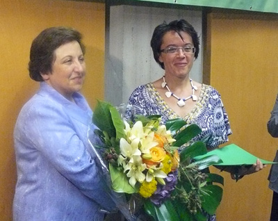
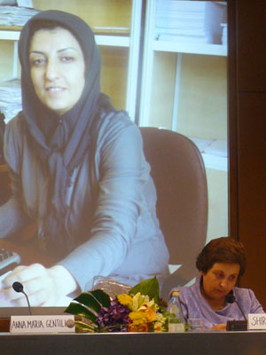

|
|

نرگس محمدی : اکنون باید از امید و عشق سخن گفت / شیرین عبادی جایره نرگس محمدی را به جای او دریافت کرد
جمعه12 تیر 1388
تغییر برای برابری - دوم جولای در مراسمی که با حضور شیرین عبادی در شهرداری و سالن فرمانداری شهر بولزانو ایتالیا برگزار شد شیرین عبادی، برنده نوبل صلح ضمن سخنرانی در باره وضعیت حقوق بشر در ایران ، جایزه الکساندر لنگر 2009 را به جای نرگس محمدی که برنده این جایزه و ممنوع الخروج بود دریافت کرد. نرگس محمدی روزنامه نگار، فعال حقوق بشر و حقوق زن و نایب رئیس کانون مدافعان حقوق بشر، یک ماه پیش چندی هنگامی که قصد شرکت در کنفرانس زنان در افریقای جنوبی را داشت ممنوع الخروج شد. دلیل اهدای جایزه الکساندرلنگر به نرگس محمدی به خاطر شجاعت او در تلاش و دفاع او از حقوق دانشجویان، زنان، و دیگر فعالان مدنی است.

هنگام اهدای جایزه الکساندر لنگر، تماس تلفنی نرگس محمدی با خانم عبادی فضای مراسم را به هیجان درآورد و جمعیت با دست زدن های طولانی احساسات خود را بروز دادند. نرگس محمدی ضمن ارسال متن سخنرانی اش برای قرائت در مراسم، خود نیز تلفنی با جمعیت حاضر سخن گفت.
شیرین عبادی ضمن تشکر از بنیاد الکساندرلنگر همبستگی مردم ایتالیا را به مردم ایران موثر خواند . او باتشریح وضعیت فعالان حقوق بشر و اظهارنگرانی از وضعیت حقوق بشر در ایران ، از دولت ایران خواست از اعمال خشونت دست بردارد و انتخابات را مجددا تکرار کند.
متن سخنرانی نرگس محمدی در زمان اهدای جایزه الکساندر لنگر
نرگس محمدی : اکنون باید از امید و عشق سخن گفت

هر كس حق آزادي عقيده و بيان دارد."(ماده 19 اعلاميه جهاني حقوق بشر)
اگر روزي تحقق ماده 19 اعلاميه جهاني حقوق بشر را شاهد باشيم، آن روز، روز پيروزي انسان خواهد بود. اگر روزي انسان بتواند به دور ازترس ، نا امني ، زندان و مرگ افكار و عقايد خود را ابراز نموده و براي انتشار ان ار طرق مسالمت آميز اقدام نمايد ، استبداد فرو خواهد ريخت. اما تا ان روز ، روزگار سختي پيش روي همه انسانهايي است كه دل در گرو آزادي دارند.
بسيار متاسفم كه امروز موفق نشدم تا در ميان شما دوستان عزيز باشم.در تاريخ 8 مي و زماني كه قصد شركت در نشست زنان جهان در گواتمالا را داشتم به شكل غير قانوني و بدون هر گونه مستند قانوني ممنوع الخروج شدم وپاسپورت من توسط نيروهاي رياست جمهوري مستقر در فرودگاه ضبط شد.
نيك ميدانيد كه اين روزها در ايران چه ميگذرد. بسياري از روزنامه نگاران ، مدافعان حقوق بشر، فعالان سياسي در زندان هستند. از طرفي صحنه هاي دردناك كشته شدن دختران و پسران جوانمان ، اندوهي بر دلهامان نشانده كه وصف ناپذير است. چهره معصوم ندا ، دختر جواني كه نماد اعتراض مسالمت اميز ايرانيان شده است، از خاطرمان محو نمي شود. البته حركت و خواست مردم ايران نشان از اميد و آينده اي روشن براي تحقق آزادي و عدالت در اين سرزمين سزبلند دارد.
ملت ايران يكصد سال است كه در راه آزادي و عدالت و تحقق دموكراسي در كشور خود از جان و مال و آمال خود گذشتند و براي دست يافتن به آرمانهاي مشترك بشريت سخت در تلاشند و قطعا پيروز خواهند شد.
بايد از اميد و عشق سخن گفت و چه اميدي قدرتمند تر از ان كه در جهان كنوني اين زنجير به هم پيوسته انسان ها در سراسر جهان است كه يكديگر را در هر گوشه اي از اين دنيا حمايت ميكند.
اكنون ديگر هيچ حكومتي نمي توتند به بهانه حاكميت ملي ديواري بر دور مردم خويش كشيده و به بهانه حاكميت ملي هر رفتاري را كه اراده نمايد با شهروندان كشورش بنمايد و هر صداي معترضي را از گوشه كنار جهان دخالت در امور خود نام نهد .
در مقدمه اعلاميه جهاني حقوق بشر مفاهيم بنيادي وجود دارد از جمله وحدت اعضاي خانواده بشري و حيثيت ذاتي انسان .به عبارتي ديگر اكنون سرنوشت يك انسان در هر سرزميني مربوط به حكومت آن كشور نيست ، بلكه مربوط به اعضائ خانواده بزرگ بشريت است.
اكنون سخن گفتن و دفاع كردن از حقوق مردم فلسطين ، آمريكا، افغانستان ، ايران و... و اعتراض به نقض آن توسط هر دولت و هر قدرتي چه حاكمان آن كشورها و چه كشورهايخارجي نه تنها دخالت در امور آن كشورها نيست و نبايد منع شود بلكه عينا وظيفه و تعهد انساني هر انسان آزاده اي در هر جاي جهان است. اين مسئله نه تنها در اعلاميه جهاني حقوق بشر بلكه در تمامي مذاهب به زبان ها و اشكال مختلف تصريح و تاكيد شده است و سعدي شاعر نامدار ايران نيز چه زيبا گفته است كه " بني ادم اعضاي يكديگرند."
از همين روي از حمايت نهاد مدني معتبر ومهم الكساندر لانگر از مدافعان حقوق بشر در جهان و اعطائ جايزه امسال به اين بنده حقير بسيار ممنون و سپاسگذارم و به ارزش معنوي اين جايزه نيك واقفم. اين جوايز نه به يك فرد، بلكه متعلق به تلاشگران جنبش آزاديخواهي در كشور ايران است. اهدائ چنين جوايزي به مدافعان حقوق بشر در سراسر جهان ايجاد حلقه هاي قدرتمند در زنجيره محكم و به هم پيوسته انسان ها در سراسر جهان است كه پيمودن راه سخت آزادي و دموكراسي را همرام با حمايت هاي جهاني هموار مي سازد.
با سپاس ار صبری نجفی